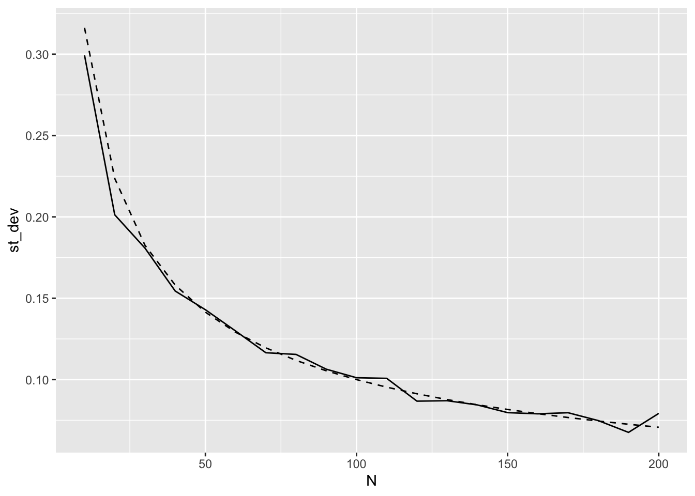

sim_norm(N = 10)[1] -0.5799978sim_norm(N = 10)[1] 0.08309603sim_norm(N = 10)[1] -0.218147This assignment is to be handed in as an .R-file through Canvas. Your answer will be reviewed by a teaching assistant as well as two fellow students. Do take the time to condsider the feedback. You will also receive two random answers from fellow students for review. Try to find one positive aspect as well as one suggestion for improvement in each of the answers. You must complete both peer reviews in order to pass the assignment.
In this assignment we will use what we have learned about functions and loops to explore some basic concepts that we may (or may not) remember from our basic statistics courses.
Assume that we observe n independent realizations X_1,\ldots,X_n of the random variable X having mean \textrm{E}(X) = \mu and variance \textrm{Var}(X) = \sigma^2. We know that the sample mean \overline X is unbiased:
\textrm{E}(\overline X) = \mu. Furthermore, we know that the variance of the sample mean is given by
\textrm{Var}(\overline X) = \textrm{Var}\left(\frac{1}{n}\sum_{i=1}^n X_i\right) = \frac{1}{n^2}\cdot n \cdot \textrm{Var}(X) = \frac{\sigma^2}{n}, and hence that the standard deviation of the sample mean is given by \textrm{SD}(X) = \sigma/\sqrt{n}. All this makes very good sense: As the sample size increases, the precision of the sample mean as an estimator for the population mean increases as well, because the standard deviation decreases towards zero with the speed of 1/\sqrt{n}. Let us set up a simulation experiment to see how this works in practice.
N , mu and sigma that simulates N observations from a normal distribution with mean mu and standard deviation sigma, and returns the mean of the sample. The default value of mu should be 0 and the default value of sigma should be 1. Give the function a suitable name.The function for generating observations from the normal distribution is rnorm(), see the help file to see what the arguments are called, and pay particular attention to make sure that you do not mix up variance and standard deviation. Repeated applications of the function should look something like this:
… or with a different value of the population mean:
M and assign to it an integer, say M <- 20. Create an empty vector of length M, and use a for-loop to fill the vector with sample means from repeated applications of the function you made in question 1. Use whatever sample size that you wish.Replace the dots (...) in the code chunk below.
Using N = 10 and M = 20 should give something like this (however not with identical results because you will sample different numbers).
[1] 0.30148047 0.34238671 -0.30863632 -0.57854791 -0.60801999 -0.01339002
[7] -0.08601677 0.59505410 -0.29916896 0.15679253 -0.10525442 -0.07492485
[13] -0.33265662 -0.23250182 0.22954421 -0.43812803 -0.12109439 0.05580288
[19] 0.02971952 -0.26866918The theoretical value is \sigma/\sqrt{n} as we saw in the introduction, or just 1/\sqrt{n} if you used the default value of sigma = 1.
Now, we want to do a systematic experiment where we calculate the sample variance for a relatively large number of sample means (i.e. M relatively large) for different values of N. We would like to do that by creating a table with the following structure:
N |
st_dev |
sigma |
theoretical |
|---|---|---|---|
10 |
1 |
1.3162278 |
|
| \ldots | \ldots | \ldots | |
200 |
1 |
0.07071068 |
The first column contains the sample size that we use for calculating the sample means, the second column is empty for now, but will eventually contain the empirical standard deviation of M means for that sample size, the third column contains the value of sigma that we have chosen for the experiment, and the final column contains the theoretical value for the standard deviation of the means (\sigma/\sqrt{n}).
You can use the seq() function to create a sequence of numbers, by for example specifying the minimum and maximum value and the interval between each entry (see ?seq for details). You can make a tibble-type data frame (a tibble is just a data frame that has a few additional features that are particularly useful in the tidyverse) using the following structure:
And then you can make the theoretical-column using for instance a pipe and a mutate().
st_dev-column using a for-loop and the function you made in question 1.You must loop over all the rows of the data frame that you created in the last question, and fill in the standard deviations such as the one we calculated in question 3. That is: we can solve this by putting a for loop inside a for loop. In that case we must be careful to not mix up the two counting indices.
Your code might look something like this, assuming that you have defined the number M and that you have initialized the data frame in the previous question:
for(i in 1:nrow(simexp)) { # "Outer" for loop, using "i" as counting index
# Input the code from question 3 to create a vector of sample means.
# You must, however change the counting index to something else ("j" for example)
# Within this "inner" loop, you must also pick out the correct N-value from the
# data frame with "simexp$N[i]".
# Insert the standard deviation of the sample means into the data frame.
# Can be something like this:
simexp$st_dev[i] <- sd(sample_means)
}NB! It is good if some alarm bells go off here. Nesting for loops inside of each other is not something that we like, because they are so inefficient. A natural next step here is to see if we can get rid of one of them by vectorizing or some other technique (that might be slightly too advanced for us at this point).
Here is a simple plot using M = 200; observed as solid line, theoretical as dashed line. Looks good!

In the real world you will sometimes encounter data with strange distributions. One such example is insurance claims. For many insurance products, e.g. fire insurance, most customers will never have a claim. But occasionally a house may burn down, leading to a large claim because it must be rebuilt from the ground up. For the insurance industry it is vital that the expected claim cost is estimated correctly.
To see what claims data can look like, we can use the “tweedie”-package. We can interpret an observation as the total claim cost for one insurance held for a full year. The parameters phi and power control the shape of the distribution, and mu is the expected value.
The function rtweedie(n, mu, phi, power) generates n observations from the tweedie distribution with the specified parameters. You can try to generate 10 insurance claims from the distribution with mean mu = 10 and shape parameters phi = 10 000 and power = 1.9 using the following line:
Most likely you will observe 10 zeros, each of which belong to the majority of houses that do not burn down in a given year. If you do observe a non-zero, however, this would represent the total amount claimed by a single (unlucky) insurance holder that year.
So what is the expected value of the claim for each customer? The long-run average across all customers of the insurance company, i.e. the total amount of money that the company on average pays out to their policy holders divided by the number of policy holders and the number of years of data?
We know the answer to this question in our particular case because we generate the observations from a known probability distribution: The answer is mu = 10 000. Knowing this number is obviously very important to the company, because it dictates that the price of each of the insurance policies should be something like
10 000 + \text{Costs} + \textrm{Safety margin} + \textrm{Profits}, that is, the amount that the insurance company expects to pay back to the customer in damages, plus the costs of running the company, plus some safety margin to make sure that the natural fluctuations from year to year do not cause the company to lose money in bad years, plus some profits that make the whole endeavor worthwhile as a business.
The expected payout, however, is not known in practice, and must be estimated from historical data. We usually do this by taking the average, but we see immediately that it is not obvious that this will work in our situation above where we had just ten observations. If you sampled ten zeros, then the average is zero, and we have barely any information at all regarding the amount that the insurance companly must charge for these policies. In the event that you sampled one or more non-zeros, it is quite unlikely that the average over ten observations is anywhere near the true expected value of 10 000.
We can ramp this experiment up a notch, by rather sampling 100 000 observations from this distributions (or claimed amount from 100 000 customers over a given year if you wish) and then taking the average:
This number is likely not that far from the true expectation. The story line here is as follows: How large must the sample be for the insurance company to make useful statistical inferences about their population of customers?
One classical method for making statements regarding the unknown population mean is the t-test. You may recall from your introduction to statistics that the t-statistic provides a measure of the distance from the observed sample mean to some hypothesized population mean that is approximately normally distributed. This is due to the Cental Limit Theorem, which postulates that the distribution of the sample mean (and essentially any other statistic that is based on a sum of random variables such as the t-statistic) converges towards the normal distribution… which is almost always true. One exception is if the underlying distribution of the observations is exceptionally weird. We have already seen that the claim-type data that we generate from the tweedie distribution are quite special, and that we need a fair amount of data in order to see the usual convergence of the sample mean towards the population mean.
So: How large must the sample size be in the insurance context? Let us explore.
In the code snippet below, we first define the variables N and true_mu and set their value to 100 and 10 000, respectively. We then sample n observations from the tweedie distribution having expected value equal to true_mu (and phi = 1000 and power = 1.9 as above).
Finally, we use the sampled data to test the null hypothesis whether \mu = 10 000, a hypothesis that we know is true. However, if the p-value of the test is smaller than 5%, then we reject the null hypothesis at the 5% level.
You can check this several times and see what you get. If the t-test works as it should (i.e., if the sample is large enough for the Central Limit Theorem to provide a reasonable approximation for the distribution of the test statistic), then we should reject the null hypothesis 5% of the times.
But, why repeat such a trivial task manually? Let us put it in a loop, an perform a proper simulation experiment. The idea is to simulate M datasets, each with N observations, and run the t-test on each one of the M datasets. Again, with a 5% significance level we should expect to reject the null in about 5% of the times that we do this, if we have enough data.
Perform the following tasks:
simTweedieTest() that takes N as argument. The function should simulate a data set with a tweedie-distribution with parameters mu = 10000, phi = 100, power = 1.9, and run a t-test on the simulated data using the null hypothesis \mu_0 = 10000. The function should return the p-value of the test.MTweedieTests(), that takes M, N and alpha as arguments. This function should call the simTweedieTests() function M times with a sample size of N. The function MTweedieTests() should then return percentage of tests where the p-value is lower than alpha (e.g. if we run tests on M = 10 datasets, and have p-values lower than \alpha = .05 in two of the tests, the function should return 0.2).This can be solved by making an empty vector of size M, which we then fill with p-values using a for-loop. If you want to try to make the code briefer, without using the for-loop explicitly, you can check out the function replicate(M, fun(...)). `replicate() works well for random number generating functions.
Create a data frame tibble(N = c(10, 100, 1000, 5000), M = 100, share_reject = NA). Use a loop and the MTweedieTests-function to fill in the values in the share_reject-column. Create a figure with N on the X-axis and share_reject on the Y-axis. What does this tell you of the validity of the t-test in on this specific distribution? What does “large enough sample” mean for this?
(Trickier) How general are the findings in the previous question? And can we be sure we wrote the code correctly? If the data follows a normal distribution instead of a tweedie distribution we should expect that the t-test works better at lower sample sizes. Create a figure similar to question 3, but with two curves: one for tweedie-distributed data and one for normally distributed data. You will have to rewrite the functions from questions 1-3. Think carefully on how you structure the functions: avoid duplicating code, use sensible names for arguments and functions, and ensure that the mean of the data and the test is consistent.